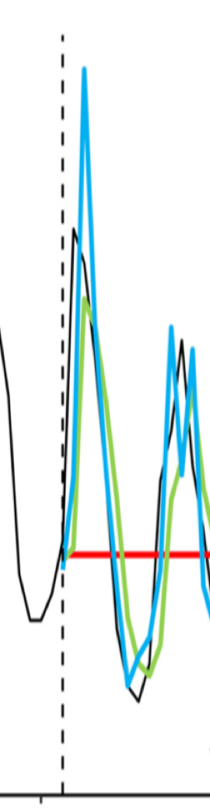

My approach is to develop general ecological theory and then test it empirically. To develop theory I use both computational and analytical methods, including simulations of stochastic multispecies models of ecological communities and analyses of the resulting community matrices. I test model predictions in aquatic ecosystems using a variety of empirical methods, including field observations and lab experiments, but mainly through analysis of existing long-term time series.
|  |
Successfully predicting the future states of systems that are complex, stochastic, and potentially chaotic is a major challenge. Model forecasting error (FE) is the usual measure of success; however model predictions provide no insights into the potential for improvement. In short, the realized predictability of a specific model is uninformative about whether the system is inherently predictable or whether the chosen model is a poor match for the system and our observations thereof. Ideally, model proficiency would be judged with respect to the systems’ intrinsic predictability, the highest achievable predictability given the degree to which system dynamics are the result of deterministic vs. stochastic processes. Here we show how intrinsic predictability may be quantified with permutation entropy (PE), a model-free, information-theoretic measure of the complexity of a time series. By means of simulations, we show that a correlation exists between estimated PE and FE and show how stochasticity, process error, and chaotic dynamics affect the relationship. This relationship is verified for a data set of 461 empirical ecological time series. We show how deviations from the expected PE–FE relationship are related to covariates of data quality and the nonlinearity of ecological dynamics. These results demonstrate a theoretically grounded basis for a model-free evaluation of a system’s intrinsic predictability, providing a baseline of forecasting proficiency against which modeling efforts can be evaluated ( |
 |
Our capacity to forecast how species respond to press perturbations such as climate change is limited by our imprecise knowledge of pairwise species interaction strengths and the many direct and indirect pathways along which perturbations can propagate between species. Network complexity (size and connectance) has thereby been seen to limit the predictability of ecological systems. In this study, Mark Novak and I demonstrate a counteracting mechanism in which the influence of indirect effects declines with network complexity when species interactions are governed by universal allometric constraints. With these constraints network size and connectance interact to produce a skewed distribution of interaction strengths whose skewness becomes more pronounced with increasing complexity. Together, the increased prevalence of weak interactions and the increased relative strength and rarity of strong interactions in complex networks limit disturbance propagation and preserve the qualitative predictability of net effects even when pairwise interaction strengths exhibit substantial variation or uncertainty ( |
 |
Although temperature is often identified as the main environmental factor defining the distribution of marine species, the mechanisms producing these community-level patterns are not well understood. Using simulated allometric trophic network (ATN) models, I investigated community-level patterns that emerge from individual-level (physiology) temperature effects. I found that the persistence of cold-adapted ecototherms was greatest when ingestion rates were not as sensitive to temperature as metabolic rates. However, the persistence of these species under this parameter configuration decreased with increasing temperatures (Iles in prep), as oberved in natural ecosystems and microcosm experiments. This result suggested that cold-adapted ectotherm consumers would be likely to exhibit metabolic rates that increase faster with temperature than ingestion rates. As an empirical test, I quantified the relative temperature scaling of metabolic and ingestion rates for a suite of rocky intertidal invertebrate consumers. As predicted, intertidal consumer basal metabolic rates were more sensitive to temperature than ingestion rates. Such general patterns across species in the relative temperature scaling of biological rates are extremely powerful for scaling up effects to the community-level ( |
 |
In order to predict community-level impacts, we must also understand of how the environmental conditions in which ecological communities exist are changing. Along the U.S. west coast, seasonal upwelling brings deep, cold, nutrient rich water to the ocean surface, resulting in highly productive coastal ecosystems. As upwelling is driven by large-scale atmospheric patterns, global climate change has the potential to affect a wide range of significant ecological processes through changes in water chemistry, water temperature, and the transport processes that influence species dispersal and recruitment. We examined long-term trends in the frequency, duration, and strength of upwelling events for the California Current System along the coast of Oregon and California. We found trends towards stronger and more persistent upwelling events, a pattern which is consistent with climate change predictions. There are several potential consequences of these trends, including higher nutrient loading into the photic zone, extended periods of reduced water temperatures and modified recruitment dynamics for near shore ecosystems ( |